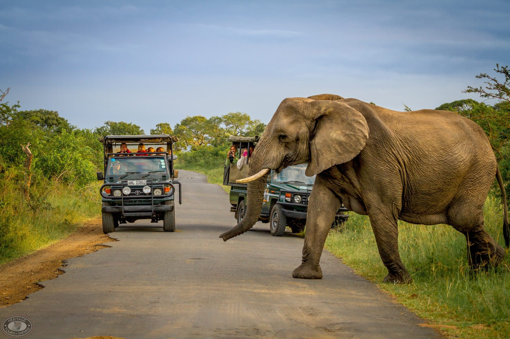
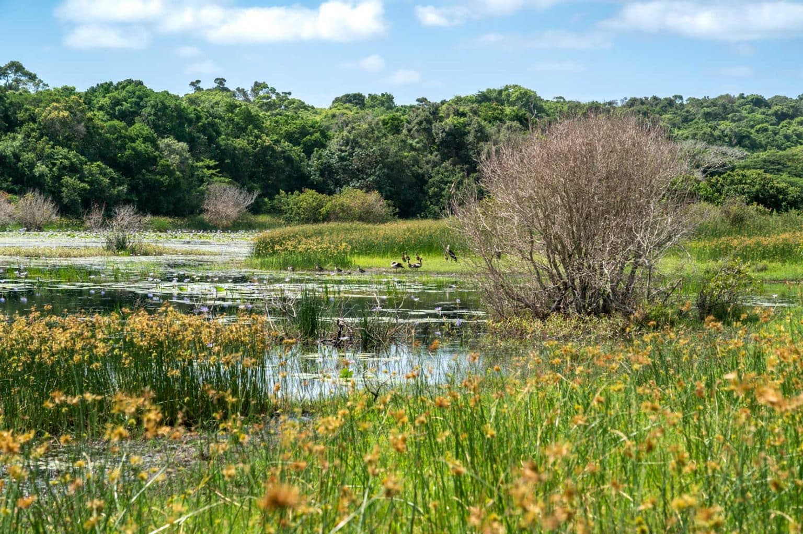

iSimangaliso
A Living Miracle
South Africa's first UNESCO World Heritage Site, and the very heart of Long Swim To Freedom.
After King Shaka kaSenzangakhona was assassinated in 1828, his loyal aide Jeqe Buthelezi fled Zululand and wandered into the land of the Thonga people — present-day Maputaland. On his return, he spoke of wonders and miracles he had witnessed, giving rise to the isiZulu saying:
"ubone isimanga esabonwa nguJeqe kwelamaThonga"
"You have seen the miracles that Jeqe saw in the land of the Thonga."
That spirit of breathless wonder lives on in iSimangaliso itself — a place so extraordinary it has humbled people for centuries.

The park's history of conservation stretches back to 1895, when the initial reserve was first established — making it one of the oldest conservation areas in South Africa. Over the following century, visionaries fought to protect this irreplaceable landscape.
Their determination was rewarded in the most meaningful way possible. In 1999, the park was proclaimed South Africa's first UNESCO World Heritage Site at an unveiling ceremony where Nelson Mandela himself was the guest of honour. It was a powerful, poignant moment — a new democracy honouring its natural inheritance.

"iSimangaliso must be the only place on the globe where the world’s oldest land mammal (the rhinoceros) and the world’s biggest terrestrial mammal (the elephant) share an ecosystem with the world’s oldest fish (the coelacanth) and the world’s biggest marine mammal (the whale)."
Stretching from the Ubombo Mountains through grasslands, forests, wetlands, mangroves, ancient dunes, magnificent beaches and coral reefs, the park brings together eight interlocking ecosystems and ten unique destinations. Over 6,500 plant and animal species have been recorded here, including 11 species found nowhere else on the planet and 467 species listed as threatened in South Africa making it not just a point of national pride, but a critical refuge for life itself.
Culturally, iSimangaliso is equally profound. Historical evidence of human habitation — including decorative pierced seashells — dates back to the Later Stone Age, with Iron Age sites near Lake St. Lucia dating to 290 AD. The park also features 700-year-old fishing traditions that communities along its borders still carry today. A key objective of iSimangaliso is to grant access to South Africans who have never had the opportunity to visit, using environmental education to deepen appreciation and contribute to its conservation.
iSimangaliso is not merely a park. It is a promise South Africa has made to itself and to the world: that beauty, biodiversity, and heritage — when cherished together — can thrive for generations to come. And it is the backdrop against which Long Swim To Freedom is being made.
iSimangaliso is where we film, and where the two crises at the heart of our documentary — rhino poaching and child drowning — intersect most urgently. By supporting Long Swim To Freedom, you help protect both this extraordinary ecosystem and the communities who depend on it.